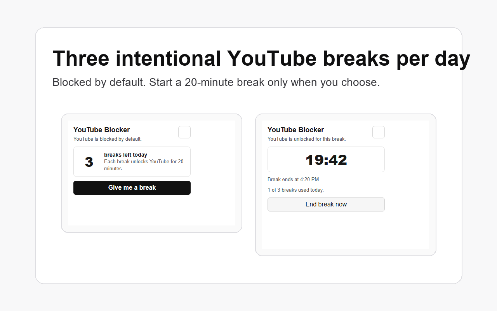

Can I add more time?
No. Breaks cannot be stacked or extended. When a break ends, YouTube is blocked again.
Support and setup
Timebox YouTube Blocker keeps YouTube locked until you choose one of your three daily 20-minute breaks. This site gives customers a simple home base for installation, troubleshooting, and privacy details.

Install help
YouTube starts blocked. A break unlocks YouTube for 20 minutes. You get three breaks per local day, and the limit resets the next day.
Install Timebox YouTube Blocker from the Chrome Web Store after approval, or download the ZIP and load the unpacked extension folder in Chrome developer mode.
The extension redirects YouTube to the blocked page automatically when no break is active.
Click "Give me a break" to unlock YouTube for 20 minutes. The timer keeps running even if the popup closes.
What customers ask
No. Breaks cannot be stacked or extended. When a break ends, YouTube is blocked again.
The blocker enters its daily lockout state. YouTube stays blocked until the next local-day reset.
No. Break state is stored locally in Chrome. The extension does not send browsing history to a server.